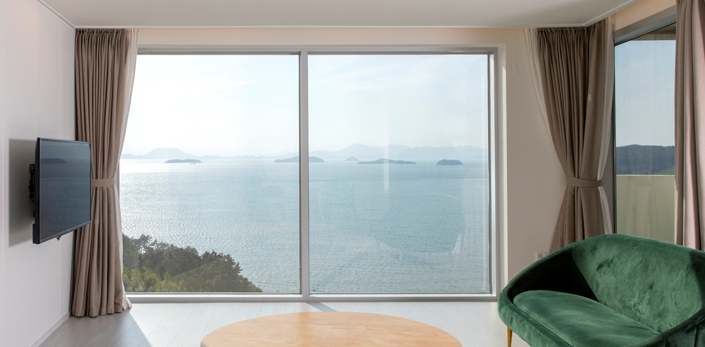
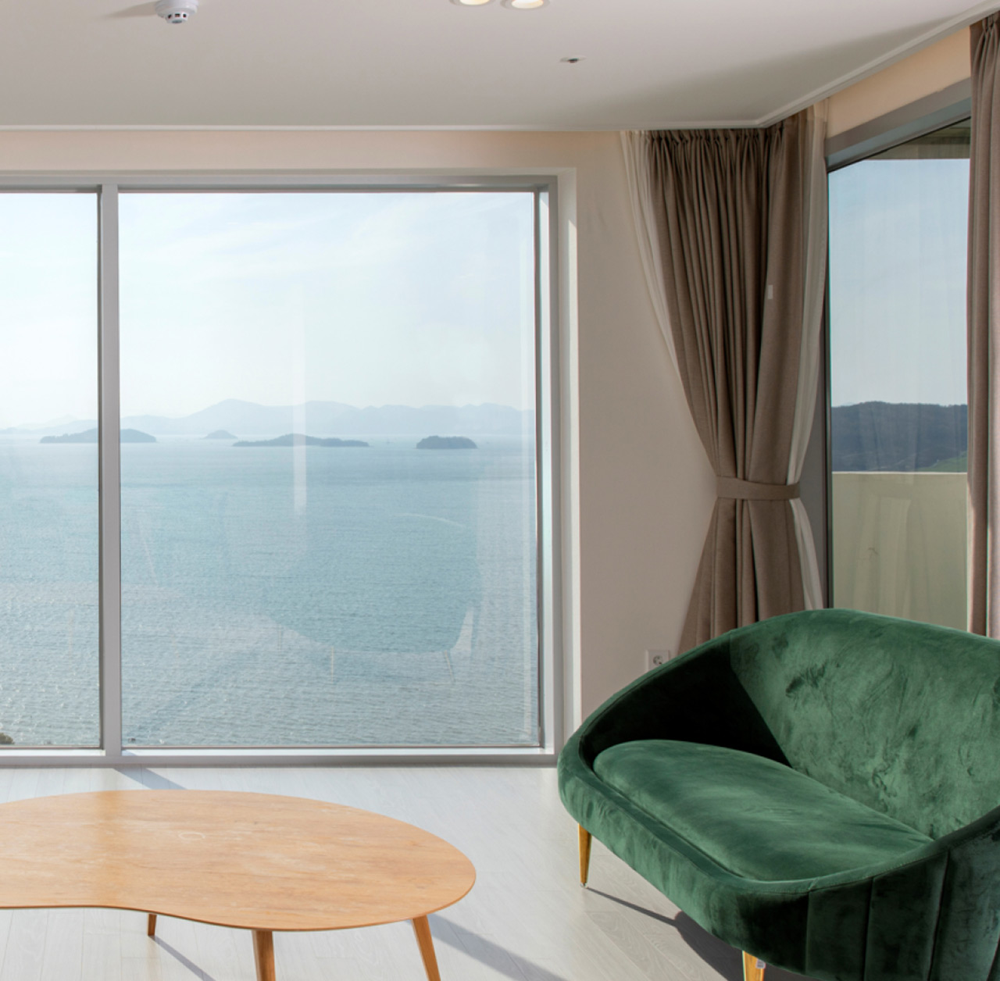

새로운 패러다임
예림 샤시
YERIM WINDOW
친환경적이고 건강한 자연창,
예림샤시는 새로운 패러다임을 제시합니다.
예림샤시는 새로운 패러다임을 제시합니다.
친환경 인증으로 더욱 안전하고 쾌적한 생활 환경을 지향하며, 다양한 색상을 통해
인테리어 조화까지 생각한 건강한 창 예림 자연창 샤시는 런칭 이래 꾸준히 점유율을 높여가고 있으며
전국 예림임업 대리점을 통한 시너지로 더 성장하고 있습니다.
인테리어 조화까지 생각한 건강한 창 예림 자연창 샤시는 런칭 이래 꾸준히 점유율을 높여가고 있으며
전국 예림임업 대리점을 통한 시너지로 더 성장하고 있습니다.